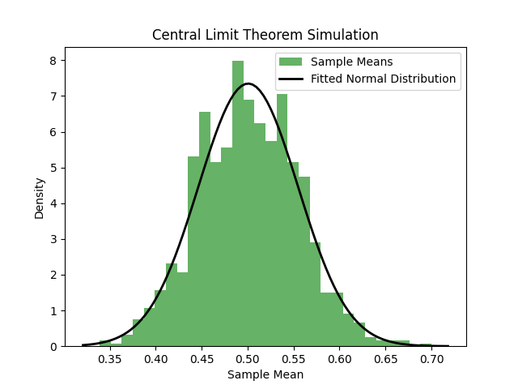

Introduction:
The Central Limit Theorem (CLT) is pivotal in statistical theory, providing profound insights into the behavior of sample means. The CLT asserts that, irrespective of the underlying distribution of a population, the distribution of sample means will approximate a normal distribution for sufficiently large sample sizes. This fundamental property extends the applicability of normal distribution-based statistical methods to scenarios where the original population distribution is unknown or non-normally distributed.
Simulation Results and Visualization:
The resulting plot illustrates the distribution of sample means through a histogram. As anticipated by the CLT, this distribution tends to exhibit a bell-shaped curve. To further emphasize this convergence, the script overlays a fitted normal distribution curve on the histogram. This visual representation provides a tangible and intuitive understanding of how the CLT transforms the distribution of sample means.
Practical Implications:
The simulation aids in comprehending the transformative impact of the CLT on statistical analyses. Its ubiquity and applicability empower statisticians and data scientists to make robust inferences about population parameters, even in scenarios with unknown or non-normally distributed populations. This script and visualization serve as concrete illustrations of the CLT's fundamental role, fostering a deeper understanding of its implications and applications in the realm of probability and statistics.